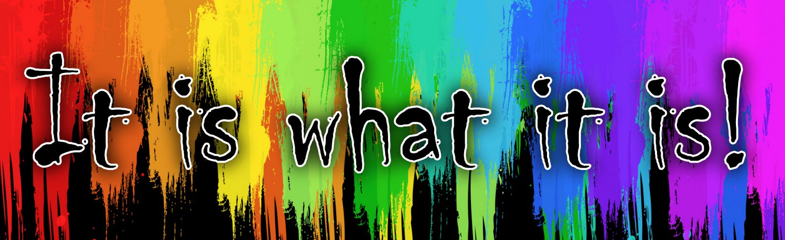

about
E-MUET Corpus Vocabulary Enhancement is a system that hep user espcially student to know more about MUET. Here, you can do some revision by answer the question provided, download Past Year Question, search for the definition of word or you can try new things which is CONCORDANCE. So, concordance is helping user by searching words and then it will come out with a ot of sentences that has the word. So, from here you will know which word that come out in MUET examination often.